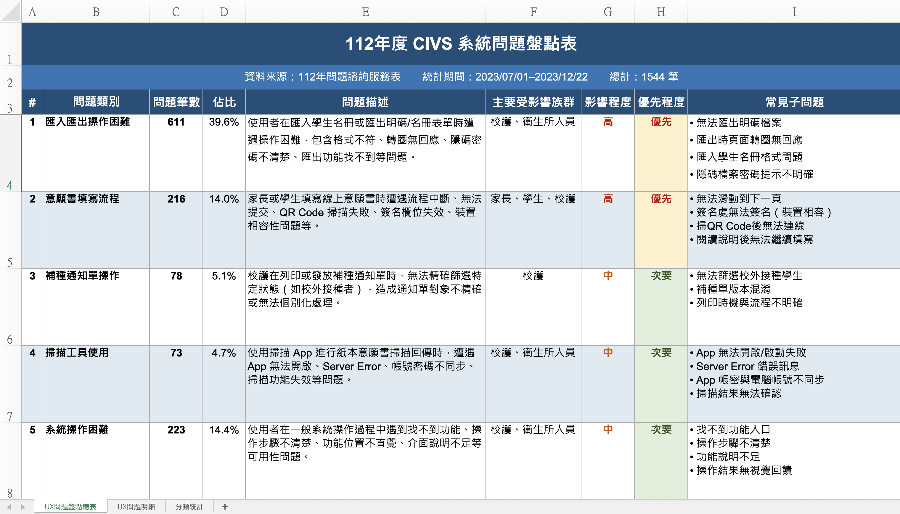

我是Leo，希望透過這份簡報
可以讓你更認識我
領域的契機
想像與期許
那一年，我被機械系退學了
我到底想做什麼？
由於我對於遊戲開發感興趣，所以決定改念靜宜大學資訊傳播工程學系。
那段學習是紮實的。不是學了一個語法就說會，而是理解資料是怎麼流動的、程式是怎麼被設計出來的。
"在靜宜大學學到的程式思考邏輯——這份基礎，是我後來能跟工程師直接溝通沒有阻礙的根本原因。"
學會基本的Coding，然後呢？
我的程式能力沒有問題，但我做出來的東西缺少一個核心：
教授的研究方向偏互動裝置與互動藝術。
那時的我，天真地以為：「讓使用者開心的設計，就是 UX。」
從雲科設運所畢業後，帶著程式的思維與剛萌芽的設計視角，我進了宏碁——準備迎接職場給我上的第一堂課。
宏碁為什麼要進軍電競？
這背後是一個市場機會
進了宏碁，擔任互動設計師
職場 UX 的現實，比我想的更複雜
在訪談中，當用戶提到那些術語，我能立刻理解他在說什麼、為什麼這樣說。
這不只是喜好，這是我能直接貢獻的差異化優勢。
這個案子，有三個我必須面對的張力
例：「玩家說『我習慣開省電模式跑遊戲』——其他人一頭霧水，但我知道他在用 CPU 降頻換取靜音，並不是真的要省電。」
→ 補充 1-2 個你記憶中最有代表性的對話片段
Prototype + 全程參與用戶研究


準備研究素材
訪談 · 焦點團體
提案簡報
Core team 每次研究後舉辦討論活動，讓全團隊分享觀點。
流程由我規劃；視覺設計與另一位設計師搭配分工。
"當你能解釋使用者行為背後的邏輯，討論的品質就會改變——你拉起的是整個團隊的理解基準。"
而是「我能讓整個團隊的討論更有品質」。

正視現實、快速補強，
當年度設計團隊最佳考績
"這讓我真正理解：深入了解使用者，對設計師來說不是加分項，是核心能力。"
DeepQ 為什麼要做 CIVS？
這是一盤更大的棋
DeepQ 是宏碁旗下的醫療科技子公司，目標是在醫療數位化市場取得立足點。
與衛生機關署合作開發 CIVS，是打入政府醫療體系、建立長期合作關係的策略性佈局——
成功後可延伸至更大的醫療資訊生態系（長照機構、社區接種站）。
CIVS
校園流感疫苗電子化系統
全台校園流感疫苗接種管理平台，串聯學校、衛生單位與家長，讓疫苗施打流程數位化、可追蹤。
上線後，我才發現
這是一個燙手山芋
三個困境，靠一個其他設計師沒有的能力撐住
有 coding 背景，讓我能快速分類每筆問題的根源，
交給對的人處理，而不是讓問題陷在「不知道是誰的責任」的漩渦中。
"設計師不是把設計稿交付就結束了——而是要確保系統能真的順暢地運作起來。"
四大需求來源，持續不斷地迭代系統
"這四個管道讓我真正接觸到使用者——而不只是坐在辦公室猜測他們的問題。"
收集到問題後，
依優先度排序
安排設計調整提案

高優先度問題：以匯入學生名冊失敗為例
.png)
.png)
在 CIVS專案中，我做了很多
非傳統UX設計師的「任務」
"這些任務讓我走出純設計角色——換來的是客戶的信任與使用者的感謝"
從一個混亂的開局，
到成功導入全國的校園
擴大
當 Vibe Coding 夠快也夠精準時，還需要手繪設計稿嗎？
自產工具迭代歷程
v1 — 自動爬蟲雛形，
直接倒回 Figma
架構流程
Demo 影片
v2 — 擷取流程不變，
終點改為 VS Code Plugin
架構流程（步驟 1–3 與 v1 相同）
Demo 影片
Wireflow Viewer v3
核心功能
相較於傳統手繪設計稿
零手動轉譯
不需要 Figma License
Wireflow Viewer v3
× CIVS 新架構
接下來，我會用 Wireflow Viewer v3 實際展示——
搭配今年度正在推動的 CIVS 新架構 vibe coding 成果，
直接生成對應的操作流程。
請繼續切換至 Demo 視窗
10 年，讓我相信
設計師的角色正在進化
在未來幾年內，AI 的能力只會越來越強。
設計師比拚的，不再是誰的介面畫得更漂亮、更精細。
而是誰的迭代速度更快，精準抓到使用者的需求與痛點並解決它。
而這正是我的優勢——
我帶來的，
不只是設計
在三者之間找到平衡點——這是我 10 年最重要的訓練，也是我能為你的團隊做的事。